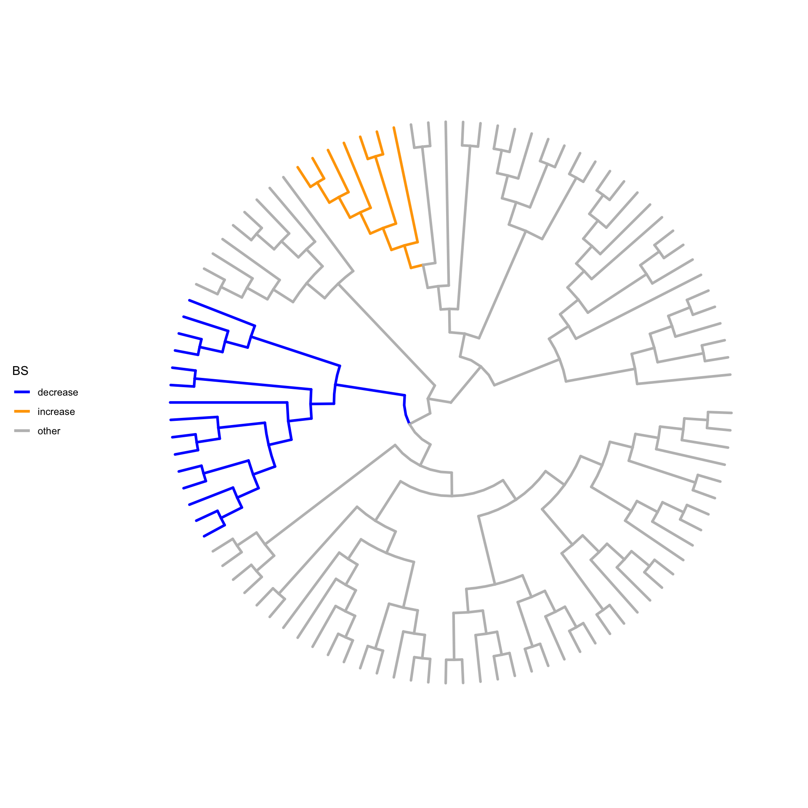
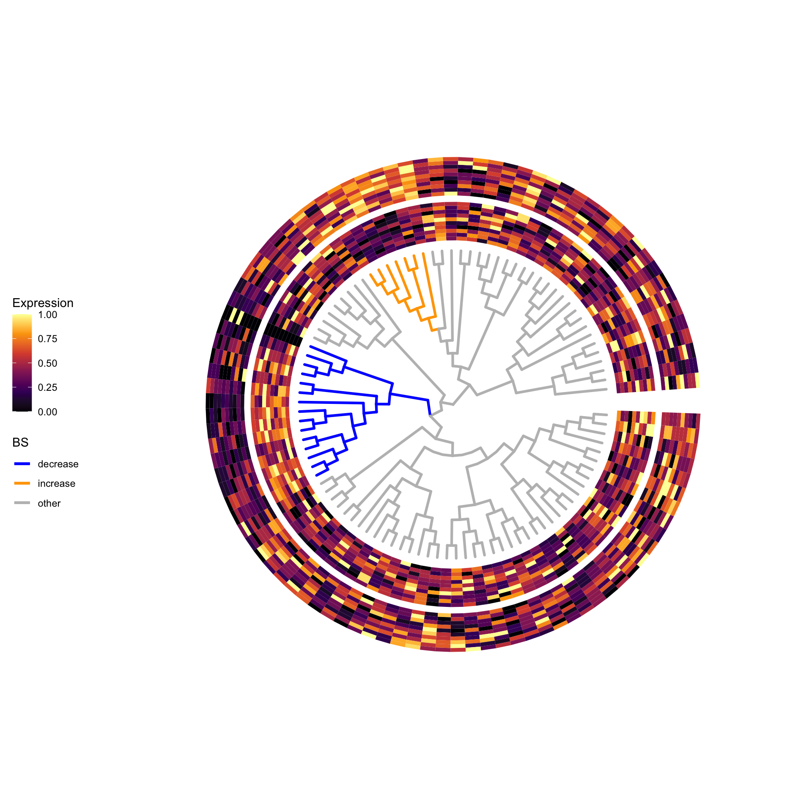
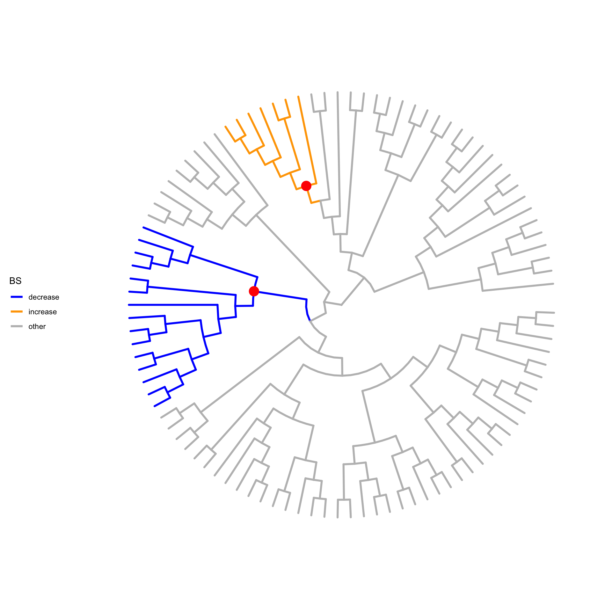

animation_SS
fionarhuang
2019-12-04
Last updated: 2020-06-09
Checks: 6 1
Knit directory: treeclimbR_animation/
This reproducible R Markdown analysis was created with workflowr (version 1.5.0). The Checks tab describes the reproducibility checks that were applied when the results were created. The Past versions tab lists the development history.
The R Markdown is untracked by Git. To know which version of the R Markdown file created these results, you’ll want to first commit it to the Git repo. If you’re still working on the analysis, you can ignore this warning. When you’re finished, you can run wflow_publish to commit the R Markdown file and build the HTML.
Great job! The global environment was empty. Objects defined in the global environment can affect the analysis in your R Markdown file in unknown ways. For reproduciblity it’s best to always run the code in an empty environment.
The command set.seed(20191203) was run prior to running the code in the R Markdown file. Setting a seed ensures that any results that rely on randomness, e.g. subsampling or permutations, are reproducible.
Great job! Recording the operating system, R version, and package versions is critical for reproducibility.
Nice! There were no cached chunks for this analysis, so you can be confident that you successfully produced the results during this run.
Great job! Using relative paths to the files within your workflowr project makes it easier to run your code on other machines.
Great! You are using Git for version control. Tracking code development and connecting the code version to the results is critical for reproducibility. The version displayed above was the version of the Git repository at the time these results were generated.
Note that you need to be careful to ensure that all relevant files for the analysis have been committed to Git prior to generating the results (you can use wflow_publish or wflow_git_commit). workflowr only checks the R Markdown file, but you know if there are other scripts or data files that it depends on. Below is the status of the Git repository when the results were generated:
Ignored files:
Ignored: .DS_Store
Ignored: .Rhistory
Ignored: .Rproj.user/
Ignored: analysis/.Rhistory
Ignored: draft/
Untracked files:
Untracked: analysis/Heatmap.Rmd
Untracked: analysis/animation_BS.Rmd
Untracked: analysis/animation_SS.Rmd
Untracked: analysis/animation_random.Rmd
Untracked: analysis/test.Rmd
Untracked: code/viewSim.R
Untracked: output/cand.pdf
Untracked: output/cand_hm.png
Untracked: output/cand_hm1.png
Untracked: output/cand_hm10.png
Untracked: output/cand_hm11.png
Untracked: output/cand_hm12.png
Untracked: output/cand_hm13.png
Untracked: output/cand_hm14.png
Untracked: output/cand_hm15.png
Untracked: output/cand_hm16.png
Untracked: output/cand_hm17.png
Untracked: output/cand_hm18.png
Untracked: output/cand_hm19.png
Untracked: output/cand_hm2.png
Untracked: output/cand_hm20.png
Untracked: output/cand_hm21.png
Untracked: output/cand_hm22.png
Untracked: output/cand_hm23.png
Untracked: output/cand_hm24.png
Untracked: output/cand_hm25.png
Untracked: output/cand_hm3.png
Untracked: output/cand_hm4.png
Untracked: output/cand_hm5.png
Untracked: output/cand_hm6.png
Untracked: output/cand_hm7.png
Untracked: output/cand_hm8.png
Untracked: output/cand_hm9.png
Untracked: output/pk_BS.gif
Untracked: output/pk_SS.gif
Untracked: output/tree.png
Untracked: output/tree_hm1.png
Untracked: output/tree_hm2.png
Unstaged changes:
Deleted: analysis/animation_S1.Rmd
Deleted: analysis/animation_S3.Rmd
Modified: output/pk_S3.gif
Note that any generated files, e.g. HTML, png, CSS, etc., are not included in this status report because it is ok for generated content to have uncommitted changes.
There are no past versions. Publish this analysis with wflow_publish() to start tracking its development.
knitr::opts_chunk$set(echo = TRUE, warning=FALSE, message = FALSE,
fig.width = 10, fig.height = 10)Load packages
suppressPackageStartupMessages({
library(ggplot2)
library(gganimate)
library(ggtree)
library(dplyr)
library(treeclimbR)
library(ape)
library(TreeHeatmap)
library(ggnewscale)
})Data simulation
We simulate a scenario (BS) that only two branches on the tree have differential abundance (signal) between groups. The data is simulated by swapping proportions of two branches, and leaves in the same branch have the same fold change.
# generate a random tree
set.seed(5)
n <- 100
tr <- rtree(n)
# generate a random probility vector for leaves
p <- rbeta(n = n, shape1 = 2, shape2 = 5)
p <- p/sum(p)
names(p) <- tr$tip.label
# # simulate counts by sampling from multinomial distribution
lse <- simMult(pr = p, libSize = 1000, tree = tr,
minTip.A = 5, maxTip.A = 12,
ratio = 1.8, scenario = "BS",
nSam = c(10, 10))Viz simulated pattern
DA branches are colored in orange or blue.
# signal branches
br <- metadata(lse)$branch
source("code/viewSim.R")
treeFig <- viewSim(lse, branch.length = "none",
layout = "circular", zoom_scale = 1, size = 1.1)
treeFig
Simulated counts are scaled and displayed in the heatmap
# counts
count <- assays(lse)[[1]]
# scale counts
scale_count <- t(apply(count, 1, FUN = function(x) {
xx <- scale(x)
(xx - min(xx))/(max(xx)-min(xx))
}))
rownames(scale_count) <- rownames(count)
colnames(scale_count) <- colnames(count)
head(scale_count) C1_1 C1_2 C1_3 C1_4 C1_5 C1_6 C1_7
t9 0.4375000 0.5625000 0.8125000 0.8125000 0.6875000 0.5625000 1.0000000
t4 0.5454545 1.0000000 0.2727273 0.4545455 0.4545455 0.3636364 0.6363636
t3 0.2857143 1.0000000 0.2857143 0.5000000 0.9285714 0.3571429 0.4285714
t28 0.6111111 0.6666667 0.6111111 0.5000000 0.6666667 0.6666667 1.0000000
t27 0.6250000 1.0000000 0.3750000 0.6250000 0.9375000 0.5000000 0.6250000
t99 0.4285714 0.3571429 0.6428571 1.0000000 0.8571429 0.2857143 0.5714286
C1_8 C1_9 C1_10 C2_1 C2_2 C2_3 C2_4
t9 0.2500000 0.3750000 0.6875000 0.06250000 0.3125000 0.06250000 0.1250000
t4 0.3636364 0.2727273 0.3636364 0.09090909 0.2727273 0.09090909 0.1818182
t3 0.3571429 0.6428571 0.7142857 0.35714286 0.5714286 0.35714286 0.1428571
t28 0.8888889 0.6111111 0.4444444 0.33333333 0.2222222 0.61111111 0.1666667
t27 0.7500000 0.8125000 0.3750000 0.68750000 0.2500000 0.12500000 0.2500000
t99 0.7857143 0.8571429 0.5714286 0.07142857 0.2857143 0.14285714 0.2857143
C2_5 C2_6 C2_7 C2_8 C2_9 C2_10
t9 0.2500000 0.1875000 0.12500000 0.1250000 0.0000000 0.00000000
t4 0.0000000 0.2727273 0.09090909 0.2727273 0.2727273 0.36363636
t3 0.3571429 0.0000000 0.42857143 0.1428571 0.1428571 0.07142857
t28 0.5000000 0.4444444 0.00000000 0.2222222 0.1111111 0.11111111
t27 0.5000000 0.5000000 0.43750000 0.6250000 0.5625000 0.00000000
t99 0.2857143 0.3571429 0.35714286 0.2857143 0.5000000 0.00000000# fig: tree
fig_0 <- ggtree(tr, branch.length = "none", layout = "circular") +
geom_hilight(node = br$A, fill = "orange", alpha = 0.3) +
geom_hilight(node = br$B, fill = "blue", alpha = 0.3) +
new_scale_fill()
# fig: tree + heatmap
vv <- gsub(pattern = "_.*", "", colnames(count))
names(vv) <- colnames(scale_count)
fig <- TreeHeatmap(tree = tr, tree_fig = treeFig, hm_data = scale_count,
column_split = vv, column_split_gap = 0.5,
rel_width = 0.5, tree_hm_gap = 0.8) +
scale_fill_viridis_c(option = "B") +
xlim(0, 22)
fig
data aggregation
all_node <- showNode(tree = rowTree(lse), only.leaf = FALSE)
tse <- aggValue(x = lse, rowLevel = all_node)
colData(tse)DataFrame with 20 rows and 1 column
group
<factor>
C1_1 C1
C1_2 C1
C1_3 C1
C1_4 C1
C1_5 C1
... ...
C2_6 C2
C2_7 C2
C2_8 C2
C2_9 C2
C2_10 C2Differential analysis
Results of treeclimbR are dependent on the methods that are used in the differential analysis.
Option 1: Wilcoxon sum rank test
# wilcox.test
test.func <- function (X, Y) {
Y <- as.numeric(factor(Y))
obj <- apply(X, 1, function(x) {
p.value <- suppressWarnings(wilcox.test(x ~ Y)$p.value)
e.sign <- sign(mean(x[Y == 2]) - mean(x[Y == 1]))
c(p.value, e.sign)
})
return(list(p.value=obj[1, ], e.sign=obj[2, ]))
}
Y <- colData(tse)$group
X <- assays(tse)[[1]]
resW <- test.func(X,Y)
outW <- data.frame(node = rowLinks(tse)$nodeNum,
pvalue = resW$p.value,
sign = resW$e.sign)
### run treeclimbR
# get candidates
cand <- getCand(tree = rowTree(tse), score_data = outW,
node_column = "node", p_column = "pvalue",
sign_column = "sign", message = TRUE)
# evaluate candidates
best <- evalCand(tree = rowTree(tse), levels = cand$candidate_list,
score_data = outW, node_column = "node",
p_column = "pvalue", sign_column = "sign")
infoCand(best) t upper_t is_valid method limit_rej level_name best rej_leaf rej_node
1 0.00 0.01666667 TRUE BH 0.05 0 FALSE 14 14
2 0.01 0.03000000 TRUE BH 0.05 0.01 FALSE 13 10
3 0.02 0.03333333 TRUE BH 0.05 0.02 FALSE 16 12
4 0.03 0.15714286 TRUE BH 0.05 0.03 FALSE 18 7
5 0.04 0.15714286 TRUE BH 0.05 0.04 FALSE 18 7
6 0.05 0.53333333 TRUE BH 0.05 0.05 FALSE 19 3
7 0.10 0.60000000 TRUE BH 0.05 0.1 TRUE 21 3
8 0.15 0.60000000 TRUE BH 0.05 0.15 TRUE 21 3
9 0.20 0.60000000 TRUE BH 0.05 0.2 TRUE 21 3
10 0.25 0.60000000 TRUE BH 0.05 0.25 TRUE 21 3
11 0.30 0.60000000 TRUE BH 0.05 0.3 TRUE 21 3
12 0.35 0.60000000 TRUE BH 0.05 0.35 TRUE 21 3
13 0.40 0.60000000 TRUE BH 0.05 0.4 TRUE 21 3
14 0.45 0.60000000 TRUE BH 0.05 0.45 TRUE 21 3
15 0.50 0.60000000 TRUE BH 0.05 0.5 TRUE 21 3
16 0.55 0.60000000 TRUE BH 0.05 0.55 TRUE 21 3
17 0.60 0.60000000 FALSE BH 0.05 0.6 FALSE 21 3
18 0.65 0.60000000 FALSE BH 0.05 0.65 FALSE 21 3
19 0.70 0.60000000 FALSE BH 0.05 0.7 FALSE 21 3
20 0.75 0.60000000 FALSE BH 0.05 0.75 FALSE 21 3
21 0.80 0.60000000 FALSE BH 0.05 0.8 FALSE 21 3
22 0.85 0.60000000 FALSE BH 0.05 0.85 FALSE 21 3
23 0.90 0.60000000 FALSE BH 0.05 0.9 FALSE 21 3
24 0.95 0.60000000 FALSE BH 0.05 0.95 FALSE 21 3
25 1.00 0.60000000 FALSE BH 0.05 1 FALSE 21 3# the detected nodes
loc <- best$output[best$output$signal.node, ][["node"]]
loc[1] 105 116 186treeFig +
geom_point2(aes(subset = (node %in% loc)), color = "red", size = 5)option 2: edgeR
res <- runDA(TSE = tse, feature_on_row = TRUE,
filter_min_count = 0,
design_terms = "group", normalize = FALSE)
out <- nodeResult(object = res, n = Inf)
head(out) node logFC logCPM LR PValue FDR
alias_186 186 0.7868856 16.83777 164.2918 1.306215e-37 2.106600e-35
alias_104 104 -0.8262653 16.85908 163.3217 2.127879e-37 2.106600e-35
alias_105 105 -0.8125369 16.70419 159.2313 1.665724e-36 1.099378e-34
alias_106 106 -0.7949966 16.56736 138.7647 4.958610e-32 1.988309e-30
alias_187 187 0.7722481 16.64723 138.7398 5.020983e-32 1.988309e-30
alias_107 107 -0.7773609 16.36176 115.0604 7.633481e-27 2.519049e-25dim(out)[1] 198 6Run treeclimbR
# treeclimbR
cand <- getCand(tree = rowTree(tse), score_data = out,
node_column = "node", p_column = "PValue",
sign_column = "logFC", message = TRUE)
best <- evalCand(tree = rowTree(tse), levels = cand$candidate_list,
score_data = out, node_column = "node",
sign_column = "logFC",
p_column = "PValue")
infoCand(best) t upper_t is_valid method limit_rej level_name best rej_leaf rej_node
1 0.00 0.03571429 TRUE BH 0.05 0 FALSE 19 19
2 0.01 0.12500000 TRUE BH 0.05 0.01 FALSE 18 8
3 0.02 0.13750000 TRUE BH 0.05 0.02 FALSE 19 8
4 0.03 0.13750000 TRUE BH 0.05 0.03 FALSE 19 8
5 0.04 0.13750000 TRUE BH 0.05 0.04 FALSE 19 8
6 0.05 0.40000000 TRUE BH 0.05 0.05 FALSE 20 4
7 0.10 0.40000000 TRUE BH 0.05 0.1 FALSE 20 4
8 0.15 0.40000000 TRUE BH 0.05 0.15 FALSE 20 4
9 0.20 1.00000000 TRUE BH 0.05 0.2 TRUE 22 2
10 0.25 1.00000000 TRUE BH 0.05 0.25 TRUE 22 2
11 0.30 1.00000000 TRUE BH 0.05 0.3 TRUE 22 2
12 0.35 1.00000000 TRUE BH 0.05 0.35 TRUE 22 2
13 0.40 1.00000000 TRUE BH 0.05 0.4 TRUE 22 2
14 0.45 1.00000000 TRUE BH 0.05 0.45 TRUE 22 2
15 0.50 1.00000000 TRUE BH 0.05 0.5 TRUE 22 2
16 0.55 1.00000000 TRUE BH 0.05 0.55 TRUE 22 2
17 0.60 1.00000000 TRUE BH 0.05 0.6 TRUE 22 2
18 0.65 1.00000000 TRUE BH 0.05 0.65 TRUE 22 2
19 0.70 1.00000000 TRUE BH 0.05 0.7 TRUE 22 2
20 0.75 1.00000000 TRUE BH 0.05 0.75 TRUE 22 2
21 0.80 1.00000000 TRUE BH 0.05 0.8 TRUE 22 2
22 0.85 1.00000000 TRUE BH 0.05 0.85 TRUE 22 2
23 0.90 1.00000000 TRUE BH 0.05 0.9 TRUE 22 2
24 0.95 1.00000000 TRUE BH 0.05 0.95 TRUE 22 2
25 1.00 1.00000000 FALSE BH 0.05 1 FALSE 22 2loc <- best$output[best$output$signal.node, ][["node"]]
loc[1] 186 104The nodes found are labeled with orange points
treeFig +
geom_point2(aes(subset = (node %in% loc)), color = "red", size = 5)
Animation
We show the searching process of candidates with animation. The chunk below is slow when knit to html. It would be faster to directly run code in console, save the .gtf file and knit by directly include the gtf file.
# tree
tree <- rowTree(tse)
leaf <- showNode(tree = tree, only.leaf = TRUE)
nleaf <- length(leaf)
# the candidate list
nodL <- cand$candidate_list
t <- names(nodL)
nt <- length(nodL)
mm <- matrix(NA, nrow = nleaf, ncol = nt)
colnames(mm) <- paste("row_", seq_len(nt), sep = "")
#
path <- matTree(tree = tree)
r1 <- lapply(leaf, FUN = function(x) {
which(path == x, arr.ind = TRUE)[, "row"]
})
for (j in seq_len(nt)) {
rj <- lapply(nodL[[j]], FUN = function(x) {
which(path == x, arr.ind = TRUE)[, "row"]
})
for (i in seq_len(nleaf)) {
# leaf i: which row of `path`
ni <- r1[[i]]
ul <- lapply(rj, FUN = function(x) {
any(ni %in% x)
})
# the ancestor of leaf i: which node in candidate j
ll <- which(unlist(ul))
if (length(ll) == 1) {
mm[i, j] <- ll
}
}}
nn <- lapply(seq_len(ncol(mm)), FUN = function(x) {
mx <- mm[, x]
xx <- nodL[[x]][mx]
cbind.data.frame(xx, rep(t[x], length(xx)),
stringsAsFactors = FALSE)
})
df <- do.call(rbind.data.frame, nn)
colnames(df) <- c("node", "threshold")
head(df)
pd <- df %>%
left_join(y = fig_0$data, by = "node") %>%
select(threshold, x, y) %>%
mutate(t = factor(threshold, levels = t))
pk_S3 <- fig +
geom_point(data = pd, aes(x, y),
color = "navy", size = 4) +
theme(plot.title = element_text(size = 25)) +
transition_states(states = t,
state_length = 8,
transition_length = 2,
wrap = FALSE) +
shadow_wake(wake_length = 0.1, alpha = FALSE,
wrap = FALSE) +
labs(title = "t = {closest_state}") +
enter_fade() +
exit_fade()
anim_save("output/pk_BS.gif", pk_S3, height = 800, width = 800)
sessionInfo()R version 3.6.1 (2019-07-05)
Platform: x86_64-apple-darwin15.6.0 (64-bit)
Running under: macOS Mojave 10.14.4
Matrix products: default
BLAS: /Library/Frameworks/R.framework/Versions/3.6/Resources/lib/libRblas.0.dylib
LAPACK: /Library/Frameworks/R.framework/Versions/3.6/Resources/lib/libRlapack.dylib
locale:
[1] en_US.UTF-8/en_US.UTF-8/en_US.UTF-8/C/en_US.UTF-8/en_US.UTF-8
attached base packages:
[1] parallel stats4 stats graphics grDevices utils datasets
[8] methods base
other attached packages:
[1] ggnewscale_0.4.0 TreeHeatmap_0.1.0
[3] ape_5.3 treeclimbR_0.1.1
[5] TreeSummarizedExperiment_1.3.0 SingleCellExperiment_1.8.0
[7] SummarizedExperiment_1.16.0 DelayedArray_0.12.0
[9] BiocParallel_1.20.0 matrixStats_0.55.0
[11] Biobase_2.46.0 GenomicRanges_1.38.0
[13] GenomeInfoDb_1.22.0 IRanges_2.20.0
[15] S4Vectors_0.24.0 BiocGenerics_0.32.0
[17] dplyr_0.8.5 ggtree_2.1.6
[19] gganimate_1.0.4 ggplot2_3.3.0
loaded via a namespace (and not attached):
[1] backports_1.1.6 circlize_0.4.8
[3] diffcyt_1.6.1 workflowr_1.5.0
[5] plyr_1.8.5 igraph_1.2.4.1
[7] ConsensusClusterPlus_1.50.0 lazyeval_0.2.2
[9] splines_3.6.1 flowCore_1.52.0
[11] fda_2.4.8 TH.data_1.0-10
[13] digest_0.6.25 htmltools_0.4.0
[15] viridis_0.5.1 fansi_0.4.1
[17] magrittr_1.5 CytoML_1.12.0
[19] cluster_2.1.0 ks_1.11.6
[21] limma_3.42.0 ComplexHeatmap_2.2.0
[23] RcppParallel_4.4.4 R.utils_2.9.0
[25] sandwich_2.5-1 flowWorkspace_3.34.0
[27] prettyunits_1.1.1 colorspace_1.4-1
[29] rrcov_1.4-7 xfun_0.11
[31] crayon_1.3.4 RCurl_1.95-4.12
[33] jsonlite_1.6.1 hexbin_1.28.0
[35] graph_1.64.0 lme4_1.1-21
[37] dirmult_0.1.3-4 survival_2.44-1.1
[39] zoo_1.8-6 glue_1.4.0
[41] flowClust_3.24.0 gtable_0.3.0
[43] zlibbioc_1.32.0 XVector_0.26.0
[45] GetoptLong_0.1.7 ggcyto_1.14.0
[47] IDPmisc_1.1.19 Rgraphviz_2.30.0
[49] shape_1.4.4 DEoptimR_1.0-8
[51] scales_1.1.0 mvtnorm_1.0-11
[53] edgeR_3.28.0 Rcpp_1.0.4
[55] viridisLite_0.3.0 progress_1.2.2
[57] clue_0.3-57 tidytree_0.3.3.991
[59] openCyto_1.24.0 mclust_5.4.5
[61] FlowSOM_1.18.0 tsne_0.1-3
[63] RColorBrewer_1.1-2 ellipsis_0.3.0
[65] pkgconfig_2.0.3 XML_3.98-1.20
[67] R.methodsS3_1.7.1 farver_2.0.3
[69] flowViz_1.50.0 locfit_1.5-9.1
[71] labeling_0.3 reshape2_1.4.3
[73] flowStats_3.44.0 tidyselect_1.0.0
[75] rlang_0.4.5 later_1.0.0
[77] munsell_0.5.0 tools_3.6.1
[79] cli_2.0.2 gifski_0.8.6
[81] evaluate_0.14 stringr_1.4.0
[83] yaml_2.2.0 knitr_1.26
[85] fs_1.3.1 robustbase_0.93-5
[87] purrr_0.3.3 RBGL_1.62.1
[89] nlme_3.1-142 R.oo_1.23.0
[91] aplot_0.0.4.991 compiler_3.6.1
[93] png_0.1-7 treeio_1.11.3
[95] tibble_3.0.0 tweenr_1.0.1
[97] pcaPP_1.9-73 stringi_1.4.6
[99] lattice_0.20-38 Matrix_1.2-17
[101] nloptr_1.2.1 vctrs_0.2.4
[103] pillar_1.4.3 lifecycle_0.2.0
[105] BiocManager_1.30.10 GlobalOptions_0.1.1
[107] data.table_1.12.6 bitops_1.0-6
[109] corpcor_1.6.9 httpuv_1.5.2
[111] patchwork_1.0.0 R6_2.4.1
[113] latticeExtra_0.6-28 promises_1.1.0
[115] KernSmooth_2.23-15 gridExtra_2.3
[117] codetools_0.2-16 boot_1.3-23
[119] MASS_7.3-51.4 gtools_3.8.1
[121] assertthat_0.2.1 rprojroot_1.3-2
[123] rjson_0.2.20 withr_2.1.2
[125] mnormt_1.5-5 multcomp_1.4-10
[127] GenomeInfoDbData_1.2.2 hms_0.5.2
[129] ncdfFlow_2.32.0 grid_3.6.1
[131] minqa_1.2.4 tidyr_1.0.2
[133] rmarkdown_1.17 rvcheck_0.1.8
[135] git2r_0.26.1 base64enc_0.1-3
[137] ellipse_0.4.1